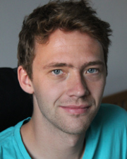
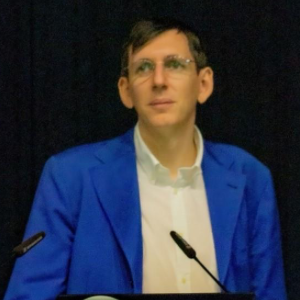
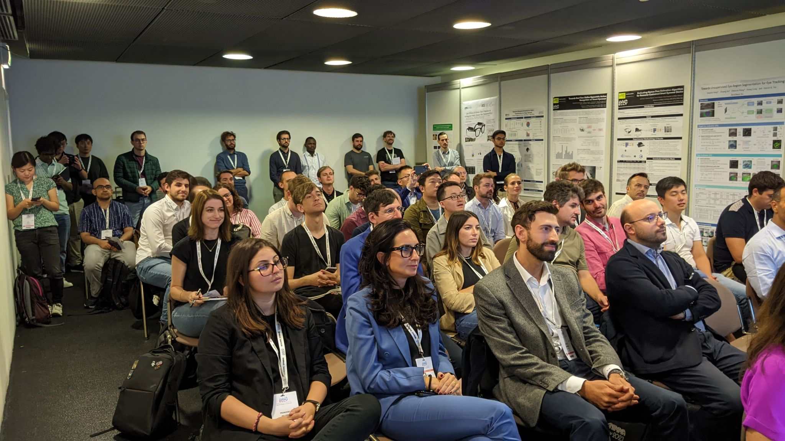
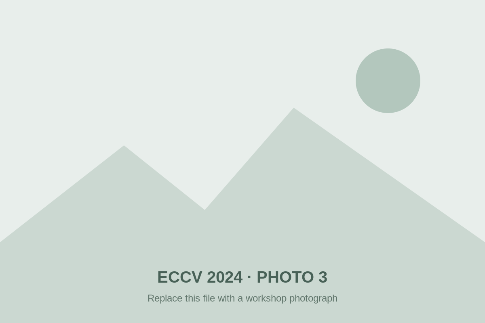
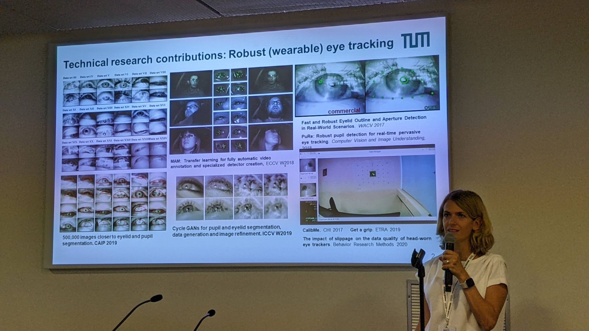

Jakob Engel
Meta Reality Labs
TalkSpatial AI for Contextual AI
1st edition · ECCV 2024
Integrating Computer Vision in Smart Eyewear (ICVSE)
The first workshop in the series established a dedicated forum for smart-eyewear computer vision, connecting algorithmic advances with computation, energy, privacy and usability constraints.
September 29, 2024 · Morning
Invited talks were interleaved with speed poster presentations and a one-hour poster and networking session.
Invited talks
The program covered spatial AI, egocentric vision, hardware-aware tinyML, visual attention and gaze guidance in extended reality.

Meta Reality Labs
TalkSpatial AI for Contextual AI

University of Catania
TalkProcedure Understanding from Egocentric Videos

Fondazione Bruno Kessler
TalkHardware-Aware Scaling in tinyML

The University of Tokyo
TalkUnderstanding Egocentric Visual Attention and Actions
Technical University of Munich
TalkImperceptible Gaze Guidance in Extended Reality
Recognition
The workshop recognized three submissions based on novelty, impact and research quality during the closing session.
Workshop contributions
Twelve papers spanning eye tracking, event-based sensing, visual-inertial SLAM, efficient transformers, pose estimation and egocentric action recognition.
Organizing committee
The first edition was organized by members of the Smart Eyewear Lab from EssilorLuxottica and Politecnico di Milano.
EssilorLuxottica
EssilorLuxottica

EssilorLuxottica
EssilorLuxottica

Politecnico di Milano
Politecnico di Milano
Workshop gallery
Photographs from the first Eyes of the Future edition, held at ECCV 2024 in Milan.



Workshop series
Move between the current workshop and the preserved archive pages without leaving the EOF site.
The first Eyes of the Future workshop, focused on computer vision for smart eyewear.
This archiveThe AI-focused edition at IJCNN 2025.
Explore archiveThe current edition on deployable vision and AI for smart eyewear.
Current edition